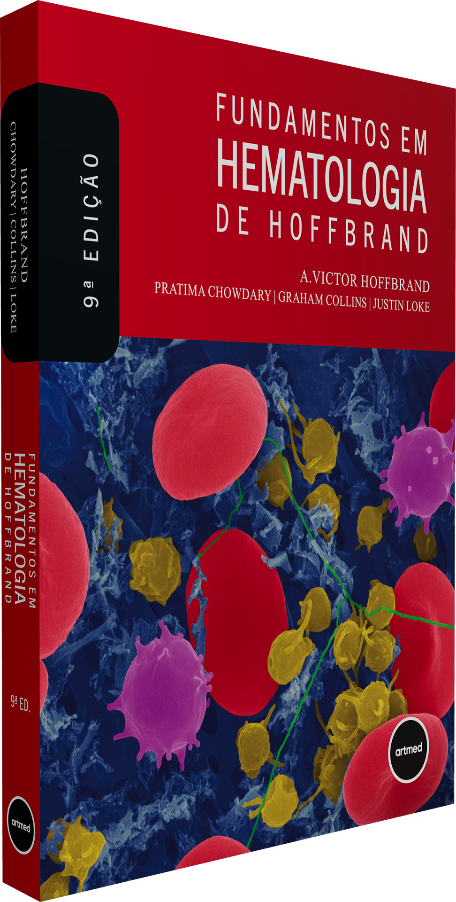

AH
A. Victor Hoffbrand
Professor Emérito de Hematologia, University College London (UCL)
Autor original da obra que se tornou referência mundial no ensino de hematologia há mais de
quatro décadas.
Há mais de 40 anos, Fundamentos em Hematologia de Hoffbrand é referência para estudantes e profissionais da medicina e de outras áreas da saúde, oferecendo uma visão clara e didática dos principais fundamentos da hematologia clínica e laboratorial.

Há mais de 40 anos, Fundamentos em Hematologia de Hoffbrand é referência para estudantes e profissionais da medicina e de outras áreas da saúde, oferecendo uma visão clara e didática dos principais fundamentos da hematologia clínica e laboratorial.
Escrita por especialistas reconhecidos, a obra cobre desde a ciência básica até o diagnóstico, as manifestações clínicas e o manejo das doenças hematológicas. Ricamente ilustrado, o livro contempla anemias, distúrbios dos leucócitos, leucemias, linfomas, mieloma, coagulopatias e aspectos hematológicos da gestação, do período neonatal e de doenças sistêmicas.
Esta 9ª edição incorpora os avanços mais recentes, incluindo a 5ª Classificação de Neoplasias Hematológicas da OMS (2022), novas técnicas para detecção de doença residual mínima e atualizações terapêuticas de doenças benignas e malignas.
Teste seus conhecimentos capítulo por capítulo. Cada resposta traz feedback imediato e a pontuação acompanha você até o fim do quiz.
Quatro nomes de referência mundial em hematologia clínica e laboratorial assinam esta 9ª edição.
Da hematopoiese aos transplantes de células-tronco, cada capítulo combina ciência básica, diagnóstico e manejo clínico atualizados.
Tire suas dúvidas sobre a obra, autores e materiais complementares.